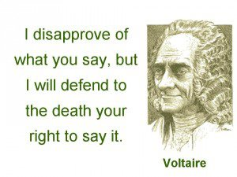
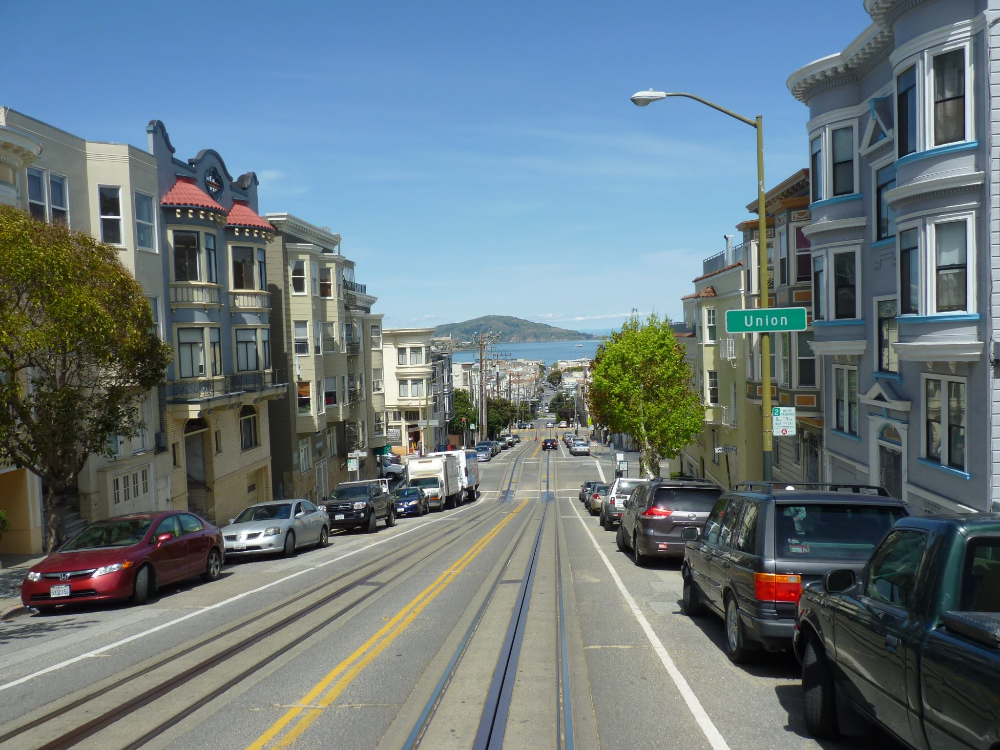
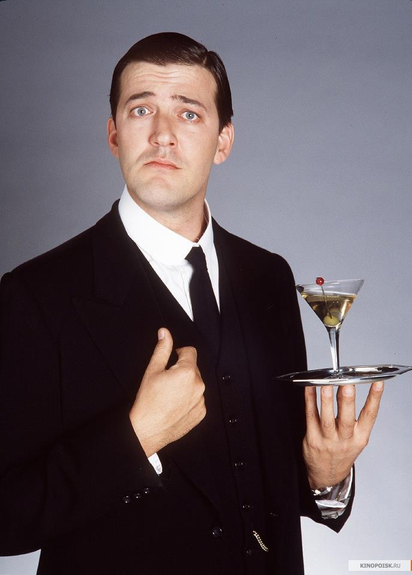

Here I am driving a train across Plankinton St. If you look out the window of this classroom, you will see where this was taken.
If you think coding is hard, try doing this at 3:30 in the morning.
Here's a rare shot of me working during daylight hours.
In high school I attended a military school. During my Senior year, I was responsible for 36 first-year students. I had to teach them everything about Military School
Since you're here, I will present some humble opinions like my favorite quote

In my opinion, San Francisco is the most beautiful place on Earth. Hopefully I can move back there some day.

Stephen Fry as Jeeves. Why? BECAUSE I"M CIVILIZED!!
